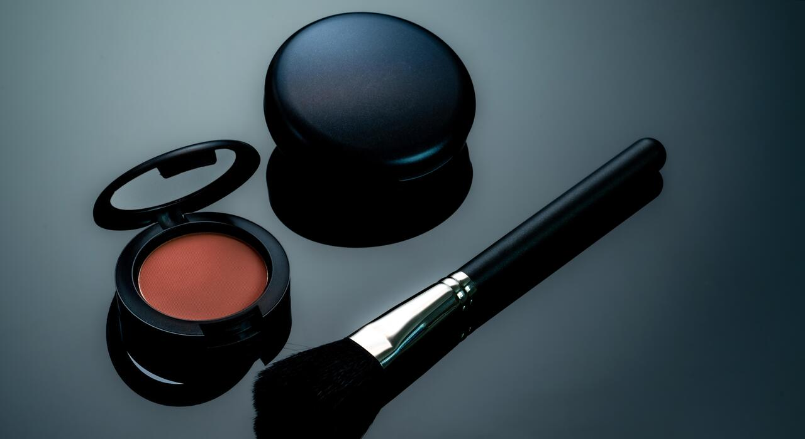

✅Light foundation or BB cream for even skin tone
✅Soft pink or nude lipstick
✅Light blush and natural glow
✅Thin eyeliner with mascara
✅Eyebrows neatly brushed

SIMPLE MAKEUP LOOK
simple Makeup ek natural or fresh look deta hai
jo daily routine ke liye perfect hota hai.is
look ka main focus hota hai skin ko healthy
glowing or natural dikhana.Heavy product ki
jagh light or easy to blend makeup use kiya
jata hai.
1-CLEAN & MOISTURE:
1-sabse pehle face ko clean karke moisture lgayen taaki skin smooth rahe.
2-LIGHT BACE:BB cream ya lightweight foundation use karen jisse natural
coverage mile.
3-CONCEALER:under eyes or acne spots cover karne ke liye thoda concealer
lgayen
4-SOFT EYEBROWS:eyebrows ko halki filling se natural shape dijiye.
5-MASCARA:Ek coat mascara se eyes fresh or open dikhti hain.
2-SKIN TONE KE HISAB SE SHADE GUIDE
1-Fair tone ke liye light pink/nude.
2-Medium tone ke liye peach nude.
3-Dusky tone ke liye peach nude.